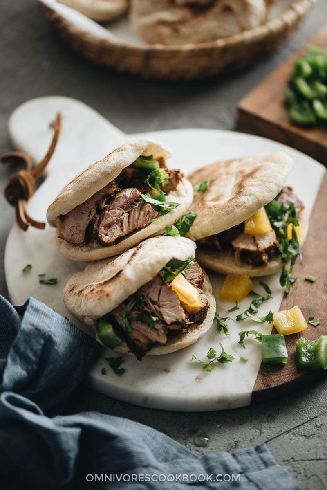

Rou Jia Mo - Xi'an-Style Street Pork Buns
Original Recipe from Omnivore's Cookbook:
Authentic Pork Belly Buns (Rou Jia Mo)

Description
Pork belly bun, or Rou Jia Mo (肉夹馍) in Chinese, is a Chinese sandwich that is similar to the idea of doner kebab or sloppy Joe.
It uses pre-cooked braised pork belly, chopped cilantro, and peppers with flatbread to create a super delicious sandwich,
that is usually sold for 1 to 2 dollars on the street.
If you’ve ordered pork belly buns in a Chinese restaurant, you might have come across the Taiwanese version.
It usually uses skin-on pork belly stuffed in steamed buns with cucumber and hoisin sauce.
The one I’m introducing today is the Mainland-style pork bun with a special gravy, that originated in Xi’an
(one of the oldest cities in China; it used to be the ancient capital of China and was the starting point of the Silk Road).
Although there are two types of meat bun – pork and halal (which usually uses beef or lamb) – the pork one is much more popular among Mainlanders.
The Xi’an style pork belly bun is made with melt-in-your-mouth pork that is slowly braised for hours in a savory master sauce.
It’s served with crispy peppers and cilantro in a fluffy grilled flatbread, with a spoonful of velvety gravy.
It’s so irresistible that you’ll always ask for more after you finish the first one.
Ingredients
Protein
- 3.5 lbs (1.2 kg) pork belly (*Footnote 1), cut into 2-inch (4.5-cm) chunks
Braising
4 dried chili peppers
3 cloves
1 whole nutmeg (or 1/8 teaspoon nutmeg powder)
1 whole star anise
1 cinnamon stick 5 centimeters / 2 inches in length
2 large pieces ginger
4 green onions , halved lengthwise
1/4 cup Shaoxing wine (or dry sherry)
1/4 cup light soy sauce (or soy sauce)
2 teaspoons dark soy sauce (or soy sauce)
1 tablespoon sugar
1/4 teaspoon salt
Pork bun (to make 10 buns)
10 homemade flatbreads (or store-bought pita bread)
1 cup cilantro , chopped
2 bell peppers , cubed (*Footnote 2)
Sriracha sauce or homemade chili oil (Optional)
Steps
Braise
- Place pork belly in a 5.5-quart dutch oven and add cold water to cover the pork by 1 inch (2 cm).
Bring to a boil over medium-high heat. Turn to medium low heat and boil for 10 minutes.
Skim the broth with a fine mesh strainer to get rid of the foam.
- Add chili peppers, cloves, nutmeg, star anise, cinnamon, ginger, green onion, and Shaoxing wine.
Bring to a boil over medium-high heat, then turn to lowest heat and simmer, covered, for 30 minutes.
- Add light soy sauce, dark soy sauce, sugar, and salt into the pot and stir to mix well.
Continue to simmer, covered, for an additional 1 hour. Skim off the oil from the top by using a fine mesh strainer.
- Uncover, and continue to simmer for another hour or so, until the broth is reduced to about one fourth and has thickened slightly.
Keep an eye on the pork during the last 30 minutes, because the broth can reduce very fast at the end and burn the bottom.
You should have at least 1 cup of broth in the pot after reducing, in order to assemble the pork buns.
Assemble
- Option 1 the modified style - Transfer one piece of pork belly onto a cutting board and slice it into bite-size pieces.
Use a spoon to stuff the pork mixture, cilantro, and peppers into the bun.
Drizzle a spoonful of broth onto the pork and add Sriracha sauce (if needed). Serve immediately.
- Option 2 authentic street food style - Transfer one piece of pork belly onto a cutting board, cut it coarsely into small chunks.
Place a handful of cilantro and a handful of peppers on top of the pork. Use a knife to chop and mix everything together.
Use a spoon to stuff the pork mixture into the bun, drizzle a spoonful broth onto the pork and add a few drops of homemade chili oil.
Serve immediately.